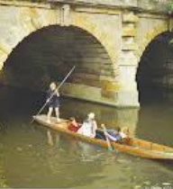

1. Punting on the River Cherwell
Punting is a quintessential Oxford activity. Rent a punt and glide along the River Cherwell while enjoying the scenic views of the university buildings and gardens.
Punting is a quintessential Oxford activity. Rent a punt and glide along the River Cherwell while enjoying the scenic views of the university buildings and gardens.
JS Sports Bar is a lively spot to catch a game, enjoy pool, and socialize with locals and visitors alike.

Port Meadow is a beautiful green space perfect for a leisurely stroll or a picnic. Enjoy views of port meadow and the surrounding nature.